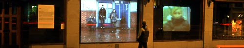

Videoinstallation in cooperation with Miriam Sogn.
|  | b c |
diffusjo'n, en, spredning; The installation consisted of two videos projected on a windowsurface, facing a buss-stop in Bentzebrugata 34 in Oslo. The video was shot at another buss-station, and was a short history of chainreaktions, with one new event occurring each day during a full week. A text spinning around the word "diffusjon" was presented in a window alongside the wideos. The installation was part of the project "window-shopping" (www.window-shopping.no). 2003 © Katja Høst & Miriam Sogn | |